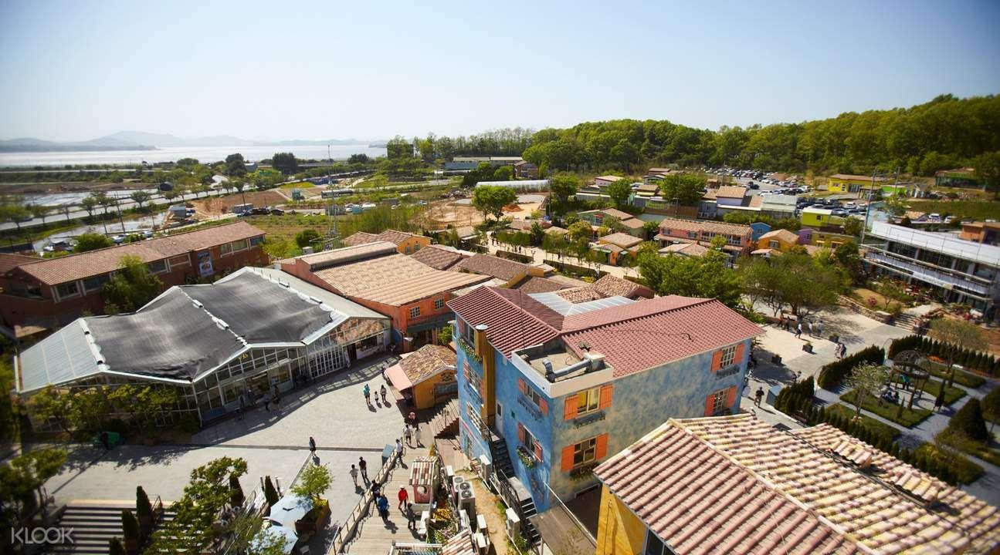

ENTP 추천 여행지
경기도 파주

추천 이유
ENTP는 새로운 아이디어와 색다른 경험을 즐기는 성향입니다. 파주는 예술과 문화, 감성적인 공간이 어우러진 도시로 다양한 볼거리와 체험거리를 통해 끊임없이 새로운 자극을 받을 수 있는 여행지입니다.
추천 여행 코스
- 프로방스 마을
- 더티프렁크 카페
- 지혜의 숲
- 헤이리예술마을
추천 포인트
- 감성적인 예술 공간 탐방
- 독특한 카페와 문화 공간 체험
- 창의적인 영감을 얻기 좋은 여행지
- 사진 찍기 좋은 포토 스팟이 풍부함